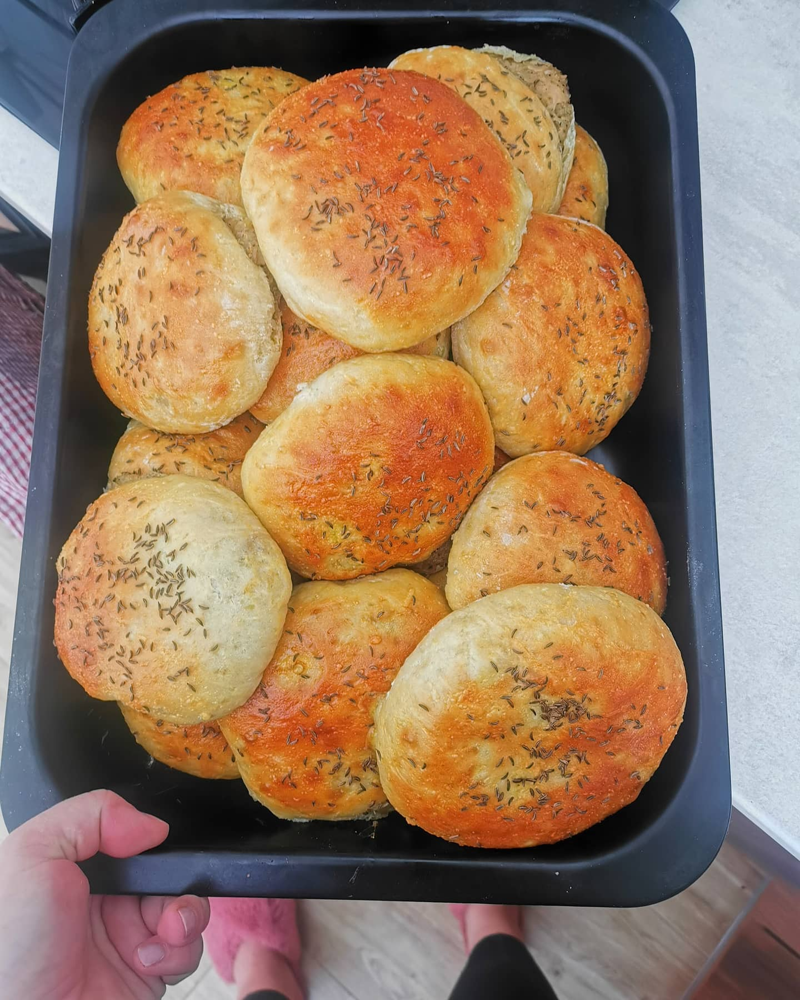

Kapustové pagáče podľa @michalindaaa — Normy Jedál
Pekáč kapustníkov😍, ale že do slova 🤭 Už ste niekedy videli takéto veľké kapustniky? 😂 Podarilo sa mi urobiť tak brutálne kysnuté cesto, že som ho nestíhala ani trochu vyvalkat a už puchlo znova 🤣 Ale cesto je mega nadychané a ľahké 👌
Tak poďte piecť ⬇️
1kg nastrúhaných zemiakov( mala som vopred uvarené asi 2 dni)
300g Múka na kysnuté cesto @babiccina_volba
3dcl mlieko
Celá kocka droždia
2PL trstinový cukor
Celé vajíčko a soľ
Z mlieka a droždia si urobíme kvások, ktorý vylejeme k postrúhaným zemiakom, pridáme vajíčko, soľ a postupne pridávam múku(múku pridávam len dovtedy, pokiaľ sa cesto neodlepi od stien misy) nepridavajte zbytočne veľa, pretože zemiakové cesto sa správa trosku inak ako klasicke kysnuté(príliš veľa múky= tvrdé cesto po upečení) necháme vykysnúť cca 2 hodiny.
Plnka ➡️
Udusená kyslá kapusta
Vypečená na drobno nakrájaná slanina
Opražená cibuľka, 2 väčšie postrúhané uvarené zemiaky
Všetko spolu vymiešame aj s výpekom zo slaniny, pridáme soľ, rascu, pripadne osolíme ešte a necháme úplne vychladnúť.
Vykysnuté cesto si rozvaľkáme, vakrajujeme pomocou hrnčeka kolieska, dáme plnku(nešetríme), na plechu necháme 10 minút podkysnuť, povajíčkujeme, prepicháme vidličkou, posypeme sezamom. Pečieme na 180 do zlatista.
#homemade #bakinglover #bakingtime #kapustniky #kapustovékoláče #colecake #peciemeslaskou #varimeslaskou #cookingathome #foodphotography #foodinspiration #foodaholic #foodblogger #foodinspiration #mojerecepty #tasty #kapustovepagace #foodaholic #foodblogfeed #foodmaking #foodmaker #foodporno #foodporn #homebaking #eatgoodfeelgood